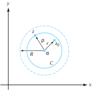

In Section 4.4 we showed that functions defined by power series have derivatives of all orders (Theorem 4.4.7). In Section 6.5 we demonstrated that analytic functions also have derivatives of all orders (Corollary 6.5.10). It seems natural, therefore, that there would be some connection between analytic functions and power series. As you might guess, the connection exists via the Taylor and Maclaurin series of analytic functions.
Definition7.2.1.Taylor series.
If \(f(z)\) is analytic at \(z=\alpha\text{,}\) then the series
is called the Taylor series for\(\bm f\) centered at\(\bm \alpha\) . When the center is \(\alpha =0\text{,}\) the series is called the Maclaurin series for\(\bm f\text{.}\)
To investigate when these series converge we need the following lemma.
Lemma7.2.2.
If \(z, \, z_0\text{,}\) and \(\alpha\) are complex numbers with \(z \ne z_0\) and \(z \ne \alpha\text{,}\) then
\(\dfrac{1}{z-z_0}=\dfrac{1}{(z-\alpha)-(z_0-\alpha)} = \dfrac{1}{z-\alpha }\left(\dfrac{1}{1-\frac{z_0-\alpha}{z-\alpha}}\right)\text{.}\) The result now follows from Corollary 4.3.3 if in it we replace \(z\) with \(\left(\frac{z_0-\alpha}{z-\alpha}\right)\text{.}\) We leave verification of the details as an exercise.
We are now ready for the main result of this section.
Theorem7.2.3.Taylor’s theorem.
Suppose that \(f\) is analytic in a domain \(G\) and that \(D_{R}(\alpha)\) is any disk contained in \(G\text{.}\) Then the Taylor series for \(f\) converges to \(f(z)\) for all \(z\) in \(D_{R}(\alpha)\text{;}\) that is,
\begin{equation}
f(z)=\sum_{k=0}^{\infty}\frac{f\,^{(k)}(\alpha)}{k!}(z-\alpha)^k\, \text{ for all } z \in D_{R}(\alpha)\text{.}\tag{7.2.1}
\end{equation}
Furthermore, for any \(r\text{,}\)\(0\lt r\lt R\text{,}\) the convergence is uniform on the closed subdisk \(\overline{D}_r(\alpha) =\{z:|z-\alpha| \le r\}\text{.}\)
Proof.
If we can establish Equation (7.2.1), the uniform convergence on \(\overline{D}_r(\alpha)\) for \(0\lt r\lt R\) will follow immediately from Theorem 7.1.5 by equating the \(c_k\) of that theorem with \(\frac{f\,^{(k)}(\alpha)}{k!}\text{.}\)
Let \(z_0 \in D_{R}(\alpha)\) and let \(r\) designate the distance between \(z_0\) and \(\alpha\) so that \(|z_0-\alpha | =r\text{.}\) Note that \(0 \le r\lt R\) because \(z_0\) belongs to the open disk \(D_{R}(\alpha)\text{.}\) We choose \(\rho\) such that \(0 \le r\lt \rho \lt R\text{,}\) and let \(C=C_{\rho }^{+}(\alpha)\) be the positively oriented circle centered at \(\alpha\) with radius \(\rho\) as shown in Figure 7.2.4.

Figure7.2.4.The constructions for Taylor’s theorem
With \(C\) contained in \(G\text{,}\) we can use the Cauchy integral formula to get
The summation on the right-hand side of this last expression is the first \(n+1\) terms of the Taylor series. Verification of Equation (7.2.1) relies on our ability to show that we can make the remainder term, \(E_n(z_0)\text{,}\) as small as we please by making \(n\) sufficiently large. We will use the ML inequality (Theorem 6.2.19) to get a bound for \(|E_n(z_0)|\text{.}\) According to the constructions shown in Figure 7.2.4, we have
\begin{equation}
|z_0-a| = r \text{ and } |z-\alpha| =\rho\text{.}\tag{7.2.4}
\end{equation}
Because \(0 \le r \lt \rho \lt R\text{,}\) the fraction \(\frac{r}{\rho}\) is less than 1, so \((\frac{r}{\rho })^{n+1}\) (and hence the right side of Equation (7.2.7)) goes to zero as \(n\) goes to infinity. Thus, for any \(\varepsilon>0\text{,}\) we can find an integer \(N_{\varepsilon}\) such that \(|E_n(z_0)| \lt \varepsilon\) for \(n \ge N_{\varepsilon}\text{,}\) and this fact completes the proof.
A singular point of a function is a point at which the function fails to be analytic. You will see in Section 7.4 that singular points of a function can be classified according to how badly the function behaves at those points. Loosely speaking, a nonremovable singular point of a function has the property that it is impossible to redefine the value of the function at that point so as to make it analytic there. For example, the function \(f(z) =\frac{1}{1-z}\) has a nonremovable singularity at \(z=1\text{.}\) We give a formal definition of this concept in Section 7.4, but with this language we can nuance Taylor’s theorem a bit.
Corollary7.2.5.
Suppose that \(f\) is analytic in the domain \(G\) that contains the point \(\alpha\text{.}\) Let \(z_0\) be a nonremovable singular point of minimum distance to the point \(\alpha\text{.}\) If \(|z_0-\alpha| =R\text{,}\) then
i.
the Taylor series \(\sum\limits_{k=0}^{\infty}\frac{f\,^{(k)}(\alpha)}{k!}(z-\alpha)^k\) converges to \(f(z)\) on all of \(D_{R}(\alpha)\text{,}\) and
ii.
if \(|z_1-\alpha| =S>R\text{,}\) the Taylor series \(\sum\limits_{k=0}^{\infty}\frac{f\,^{(k)}(\alpha)}{k!}(z_1-\alpha)^k\) does not converge to \(f(z_1)\text{.}\)
Proof.
Taylor’s theorem gives us part (i) immediately. To establish part (ii), we note that if \(|z_0-\alpha|=R\text{,}\) then \(z_0 \in D_{S}(\alpha)\) whenever \(S>R\text{.}\) If for some \(z_1\text{,}\) with \(|z_1-\alpha| =S>R\text{,}\) the Taylor series converged to \(f(z_1)\text{,}\) then according to Theorem 4.4.7, the radius of convergence of the series \(\sum\limits_{k=0}^{\infty}\frac{f\,^{(k)}(\alpha)}{k!}(z-\alpha)^k\) would be at least equal to \(S\text{.}\) We could then make \(f\) differentiable at \(z_0\) by redefining \(f(z_0)\) to equal the value of the series at \(z_0\text{,}\) thus contradicting the fact that \(z_0\) is a nonremovable singular point.
Example7.2.6.
Show that \(\frac{1}{(1-z)^2}=\sum\limits_{n=0}^{\infty}(n+1)z^n\) is valid for \(z \in D_1(0)\text{.}\)
Solution.
In Example 4.4.9 we established this identity with the use of Theorem 4.4.7. We now do so via Theorem 7.2.3. If \(f(z) =\frac{1}{(1-z)^2}\text{,}\) then a standard induction argument (which we leave as an exercise) will show that \(f\,^{(n)}(z) =\frac{(n+1)!}{(1-z)^{n+2}}\) for \(z \in D_1(0)\text{.}\) Thus \(f\,^{(n)}(0)=(n+1) !\text{,}\) and Taylor’s theorem gives
If we let \(z^2\) take the role of \(z\) in Equation (7.2.9), we get that \(\frac{1}{1-z^2}= \sum\limits_{n=0}^{\infty}(z^2)^n=\sum\limits_{n=0}^{\infty}z^{2n}\) for \(z^2 \in D_1(0)\text{.}\) But \(z^2 \in D_1(0)\) iff \(z \in D_1(0)\text{.}\) Letting \(-z^2\) take the role of \(z\) in Equation (7.2.9) gives the second part of Equations (7.2.8).
Remark7.2.8.
Corollary 7.2.5 clears up what often seems to be a mystery when series are first introduced in calculus. The calculus analog of Equations (7.2.8) is
\begin{equation}
\frac{1}{1-x^2} = \sum\limits_{n=0}^{\infty}x^{2n} \text{ and } \frac{1}{1+x^2} = \sum\limits_{n=0}^{\infty}(-1)^nx^{2n} \text{ for } x \in (-1,1)\text{.}\tag{7.2.10}
\end{equation}
For many students, it makes sense that the first series in Equations (7.2.10) converges only on the interval \((-1,1)\) because \(\frac{1}{1-x^2}\) is undefined at the points \(x=\pm 1\text{.}\) It seems unclear as to why this should also be the case for the series representing \(\frac{1}{1+x^2}\text{,}\) since the real-valued function \(f(x) =\frac{1 }{1+x^2}\) is defined everywhere. The explanation, of course, comes from the complex domain. The complex function \(f(z) =\frac{1}{1+z^2}\) is not defined everywhere. In fact, the singularities of \(f\) are at the points \(\pm i\text{,}\) and the distance between them and the point \(\alpha =0\) equals 1. According to Corollary 7.2.5, therefore, Equations (7.2.8) are valid only for \(z \in D_1(0)\text{,}\) so Equations (7.2.10) are valid only for \(x \in (-1,1)\text{.}\)
Alas, there is a potential fly in this ointment: Corollary 7.2.5 applies to Taylor series. To form the Taylor series of a function, we must compute its derivatives. We didn’t get the series in Equations (7.2.8) by computing derivatives, so how do we know that they are indeed the Taylor series centered at \(\alpha=0\text{?}\) Perhaps the Taylor series would give completely different expressions from those given by Equations (7.2.8). Fortunately, Theorem 7.2.9 removes this possibility.
Then \(a_n=b_n\text{,}\) for \(n=0,\,1,\,2,\,\ldots \text{.}\)
Proof.
By Theorem 4.4.7 part (ii), \(a_n= \frac{f^{(n)}(\alpha)}{n!}=b_n\text{,}\) for \(n=0,\,1,\,2,\ldots \text{.}\)
Thus, any power series representation of \(f(z)\) is automatically the Taylor series.
Example7.2.10.
Find the Maclaurin series of \(f(z) =\sin^3 z\text{.}\)
Solution.
Computing derivatives for \(f(z)\) would be an onerous task. Fortunately, we can make use of the trigonometric identity
\begin{equation*}
\sin^3 z = \frac{3}{4}\sin z - \frac{1}{4}\sin 3z\text{.}
\end{equation*}
Recall that the series for \(\sin z\) (valid for all \(z\)) is \(\sin z= \sum\limits_{n=0}^{\infty}(-1)^n\frac{z^{2n+1}}{(2n+1)!}\text{.}\) Using the identity for \(\sin ^3z\text{,}\) we obtain
By the uniqueness of power series, this last expression is the Maclaurin series for \(\sin ^3z\text{.}\)
In the preceding argument we used some obvious results of power series representations that we haven’t yet formally stated. The requisite results are part of Theorem 7.2.11.
Theorem7.2.11.
Let \(f\) and \(g\) have the power series representations
\begin{align*}
f(z) \amp = \sum_{n=0}^{\infty}a_n(z-\alpha)^n, \text{ for } z \in D_{r_1}(\alpha);\\
g(z) \amp = \sum_{n=0}^{\infty}b_n(z-\alpha)^n\text, \text{ for } z \in D_{r_2}(\alpha)\text{.}
\end{align*}
If \(r=\min \{r_1,r_2\}\) and \(\beta\) is any complex constant, then
\begin{align}
\beta f(z) \amp = \sum_{n=0}^{\infty}\beta a_n(z-\alpha)^n, \text{ for } z \in D_{r_1}(\alpha),\tag{7.2.11}\\
f(z) +g(z) \amp = \sum_{n=0}^{\infty}(a_n+b_n) (z-\alpha)^n, \text{ for } z \in D_r(\alpha), \text{ and }\tag{7.2.12}\\
f(z) g(z) \amp = \sum_{n=0}^{\infty}c_n(z-\alpha)^n, \text{ for } z \in D_r(\alpha)\text{,}\tag{7.2.13}
\end{align}
Identity (7.2.13) is known as the Cauchy product of the series for \(f\) and \(g\text{.}\)
Proof.
We leave the details of establishing Equations (7.2.11) and (7.2.12) for you to do as an exercise. To establish Equation (7.2.13), we note that the function \(h(z) =f(z)g(z)\) is analytic in \(D_r(\alpha)\text{.}\) Thus, for \(z \in D_r(\alpha)\text{,}\)
By mathematical induction, we can generalize the preceding pattern to the \(n\) th derivative, giving Leibniz’s formula for the derivative of a product of functions:
Substituting Equation (7.2.16) into this equation gives Equation (7.2.13) because of the uniqueness of power series.
Example7.2.12.
Use the Cauchy product of series to show that
\begin{equation*}
\frac{1}{(1-z)^2}=\sum\limits_{n=0}^{\infty}(n+1)z^n, \text{ for } z \in D_1(0)
\end{equation*}
Solution.
We let \(f(z) = g(z) = \frac{1}{1-z}=\sum\limits_{n=0}^{\infty}z^n\text{,}\) for \(z \in D_1(0)\text{.}\) In terms of Theorem 7.2.11, we have \(a_n=b_n=1\text{,}\) for all \(n\text{,}\) and thus Equation (7.2.13) gives
Find the Taylor series centered at \(a=1\) and state where it converges for
(a)
\(f(z) =\frac{1-z}{z-2}\text{.}\)
Solution.
\(\frac{1-z}{z-2} = \frac{z-1}{1-(z-1)} = (z-1)\left[\frac{1}{1-(z-1)}\right]\text{.}\) Expand the expression in brackets by replacing \(z\) with \(z-1\) in the geometric series (valid, therefore, for \(|z-1|\lt 1\)), then multiply by the \((z-1)\) term.
Let \(f(z) =\frac{\sin z}{z}\) and set \(f(0) =1\text{.}\)
(a)
Explain why \(f\) is analytic at \(z=0\text{.}\)
(b)
Find the Maclaurin series for \(f(z)\text{.}\)
(c)
Find the Maclaurin series for \(g(z) = \int\limits_C f(\zeta)\,d\zeta\text{,}\) where \(C\) is the straight-line segment from 0 to \(z\text{.}\)
5.
Show that \(f(z)=\frac{1}{1-z}\) has its Taylor series representation about the point \(\alpha =i\) given by
\begin{equation*}
f(z) = \sum_{n=0}^{\infty}\frac{(z-i)^n}{(1-i)^{n+1}}, \text{ for all } z \in D_{\sqrt{2}}(i)
\end{equation*}
Solution.
\(f(z) = \frac{1}{1-z} = \frac{1}{1-i}\left[\frac{1}{1-\frac{z-i}{1-i}}\right]\text{.}\) Expand the expression in brackets by replacing \(z\) with \(\frac{z-i}{1-i}\) in the geometric series (valid, therefore, for \(|\frac{z-i}{1-i}|\lt 1\text{,}\) or \(|z-i|\lt \sqrt{2}\)). Explain.
6.
Let \(f(z) =(1+z)^{\beta }=\exp[\beta\mathrm{Log}(1+z)]\) be the principal branch of \((1+z)^{\beta }\text{,}\) where \(\beta\) is a fixed complex number. Establish the validity for \(z \in D_1(0)\) of the binomial expansion
Suppose that \(f(z) = \sum\limits_{n=0}^{\infty}c_nz^n\) is an entire function.
(a)
Find a series representation for \(\overline{f(\overline{z})}\text{,}\) using powers of \(\overline{z}\text{.}\)
(b)
Show that \(\overline{f(\overline{z})}\) is an entire function.
(c)
Does \(\overline{f(\overline{z})} = f(z)\text{?}\) Why or why not?
9.
Let \(f(z) =\sum\limits_{n=0}^{\infty}c_nz^n=1+z+2z^2+3z^3+5z^4+8z^5+13z^6+\cdots\text{,}\) where the coefficients \(c_n\) are the Fibonacci numbers defined by \(c_0=1\text{,}\)\(c_1=1\text{,}\) and \(c_n=c_{n-1}+c_{n-2}\text{,}\) for \(n \ge 2\text{.}\)
(a)
Show that \(f(z) =\frac{1}{1-z-z^2}\text{,}\) for all \(z \in D_{R}(0)\) for some number \(R\text{.}\)
Solution.
Observe that \(1+zf(z)+z^2f(z) = 1 + \sum\limits_{n=0}^{\infty}c_nz^{n+1} + \sum\limits_{n=0}^{\infty}c_nz^{n+2}\text{.}\) Reindex and write this as \(1+\sum\limits_{n=1}^{\infty}c_{n-1}z^n + \sum\limits_{n=2}^{\infty}c_{n-2}z^n = 1 + z + \sum\limits_{n=2}^{\infty}(c_{n-1}+c_{n-2})z^n\text{.}\) Now use the relation \(c_n=c_{n-1}+c_{n-2}\) for \(n \ge 2\) to conclude \(1+zf(z)+z^2f(z) = f(z)\text{,}\) then solve for \(f(z)\text{.}\)
(b)
Find the value of \(R\) in part (a) for which the series representation is valid.
\hint{Find the singularities of \(f(z)\) and use Corollary 7.2.5.}
10.
Complete the details in the verification of Lemma 7.2.2.
11.
We used Lemma 7.2.2 in establishing Identity (7.2.2). However, Lemma 7.2.2 is valid provided \(z \ne z_0\) and \(z \ne\alpha\text{.}\) Explain why these conditions are indeed the case in Identity (7.2.2).
Solution.
The point \(z\) is on the circle \(C_{\rho }(\alpha)\) with center \(\alpha\text{,}\) so \(z \ne \alpha\text{.}\) Also, \(z_0\) is in the interior of this circle, so again \(z\ne z_0\text{.}\)
12.
Prove by mathematical induction that \(f\,\,^{(n)}(z) =\frac{(n+1) !}{(1-z)^{n+2}}\) in Example 7.2.6.
Define \(F(z)\) by \(F(z) = C(z)+iS(z)\) and complete the following:
(a)
Verify the identity \(F(z) = \int_0^z\exp (i\xi^2)\,d\xi\text{.}\)
(b)
Integrate the power series for \(\exp (i\xi ^2)\) and obtain the power series for \(F(z)\text{.}\)
(c)
Use the partial sum involving terms up to \(z^{9}\) to find approximations to \(C(1.0)\) and \(S(1.0)\text{.}\)
17.
Let \(f\) be defined in a domain that contains the origin. The function \(f\) is said to be even if \(f(-z) =f(z)\text{,}\) and it is called odd if \(f(-z) = -f(z)\text{.}\)
(a)
Show that the derivative of an odd function is an even function.
Solution.
By definition, \(f(-z) = -f(z)\text{,}\) so using the chain rule, we see that \(f\,'(z) = \frac{d}{dz}f(z) = -\frac{d}{dz}f(-z) = -f\,'(-z)(-1) = f\,'(-z)\text{.}\) But this means that \(f\,'\) is an even function.
(b)
Show that the derivative of an even function is an odd function. \hint{Use limits.}
(c)
If \(f(z)\) is even, show that all the coefficients of the odd powers of \(z\) in the Maclaurin series are zero.
Solution.
If \(f\) is even, then by part b \(f\,'\) is odd, so \(f\,'(0) = -f\,'(-0) = -f\,'(0)\text{.}\) Of course, this implies \(f'(0) = 0\text{.}\) Similarly, from part a \(f\,''\) is even, so \(f\,'''(0)=0\text{.}\) An induction argument gives \(f\,^{(2n-1)}(0)=0\) for all positive integers \(n\text{.}\) Show the details.
(d)
If \(f(z)\) is odd, show that all the coefficients of the even powers of \(z\) in the Maclaurin series are zero.
18.
Verify Identity (7.2.14) by using mathematical induction.
19.
Consider the function
\begin{equation*}
f(z) = \begin{cases}\frac{1}{1-z}, \amp \text{ when } z \ne \frac{1}{2}; \\ \;\; 0, \amp \text{ when } z = \frac{1}{2}. \end{cases}
\end{equation*}
(a)
Use Theorem 7.2.3, Taylor’s theorem, to show that the Maclaurin series for \(f(z)\) equals \(\sum\limits_{n=0}^{\infty}z^n\text{.}\)
Solution.
It is easy to show that \(f\,^{(n)}(0) = n!\) for all positive integers \(n\text{.}\) Do so via mathematical induction.
(b)
Obviously, the radius of convergence of this series equals 1 (ratio test). However, the distance between 0 and the nearest singularity of \(f\) equals \(\frac{1}{2}\text{.}\) Explain why this condition does not contradict Corollary 7.2.5.
Solution.
The point \(z=\frac{1}{2}\) is a removable singularity, since \(f\) may be redefined at \(\frac{1}{2}\) to be analytic. State what \(f\) should equal at that point.
20.
Consider the real-valued function \(f\) defined on the real numbers as
\begin{equation*}
f(x) = \begin{cases}e^{-\frac{1}{x^2}}, \amp \text{ when } x \ne 0; \\ \;\; 0, \amp \text{ when } x=0. \end{cases}
\end{equation*}
(a)
Show that, for all \(n>0\text{,}\)\(f^{(n)}(0) = 0\text{,}\) where \(f^{(n)}\) is the \(n\)th derivative of \(f\text{.}\) \hint{Use the limit definition for the derivative to establish the case for \(n=1\) and then use mathematical induction to complete your argument.}
(b)
Explain why the function \(f\) is an example of a function that, although differentiable everywhere on the real line, is not expressible as a Taylor series about 0 that is valid for any interval \((-\varepsilon, \varepsilon)\text{,}\) no matter how small \(\varepsilon\) is. \hint{Evaluate the Taylor series representation for \(f(x)\) when \(x \ne 0\text{,}\) and show that the series does not equal \(f(x)\text{.}\)}
(c)
Explain why a similar argument could not be made for the complex-valued function \(g\) defined on the complex numbers as
\begin{equation*}
g(z) = \begin{cases}e^{-\frac{1}{z^2}}, \amp \text{ when } z \ne 0; \\ \;\; 0, \amp \text{ when } z=0. \end{cases}
\end{equation*}
\hint{Show that \(g(z)\) is not even continuous at \(z=0\) by taking limits along the real and imaginary axes.}